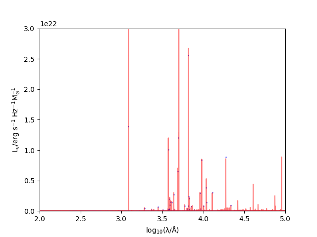

Note
Go to the end to download the full example code.
Plot the line continuum for a given grid point¶
Demonstrate how to create spectra using a collection of line luminosities instead of the default approach. Mostly for testing purposes.
/opt/hostedtoolcache/Python/3.10.15/x64/lib/python3.10/site-packages/unyt/array.py:1824: RuntimeWarning: divide by zero encountered in log10
out_arr = func(np.asarray(inp), out=out_func, **kwargs)
['Al 2 1670.79A', 'Ar 3 7135.79A', 'Ar 3 7751.11A', 'Ar 4 2853.66A', 'C 1 1657.91A', 'C 1 1992.01A', 'C 1 2582.90A', 'C 2 1334.53A', 'C 2 1335.66A', 'C 2 1335.71A', 'C 2 2325.40A', 'C 2 2326.93A', 'C 3 1906.68A', 'C 3 1908.73A', 'C 4 1548.19A', 'C 4 1550.77A', 'Ca 2 7291.47A', 'Ca 2 7323.89A', 'Cl 2 8578.70A', 'Fe 2 1.25668m', 'Fe 2 1.27877m', 'Fe 2 1.29427m', 'Fe 2 1.32055m', 'Fe 2 1.32777m', 'Fe 2 1.37181m', 'Fe 2 1.53348m', 'Fe 2 1.59948m', 'Fe 2 1.64355m', 'Fe 2 1.66377m', 'Fe 2 1.67688m', 'Fe 2 1.71113m', 'Fe 2 1.74494m', 'Fe 2 1.79711m', 'Fe 2 1.80002m', 'Fe 2 1.80940m', 'Fe 2 1.89541m', 'Fe 2 1.95361m', 'Fe 2 2395.63A', 'Fe 2 2399.24A', 'Fe 2 2406.66A', 'Fe 2 2410.52A', 'Fe 2 2598.37A', 'Fe 2 2607.09A', 'Fe 2 2611.87A', 'Fe 2 2613.82A', 'Fe 2 2625.67A', 'Fe 2 2628.29A', 'Fe 2 2631.05A', 'Fe 2 2631.32A', 'Fe 2 4243.97A', 'Fe 2 4276.84A', 'Fe 2 4287.39A', 'Fe 2 4319.62A', 'Fe 2 4346.86A', 'Fe 2 4352.79A', 'Fe 2 4358.37A', 'Fe 2 4359.33A', 'Fe 2 4413.78A', 'Fe 2 4416.27A', 'Fe 2 4452.10A', 'Fe 2 4474.90A', 'Fe 2 4814.54A', 'Fe 2 4874.50A', 'Fe 2 4889.62A', 'Fe 2 4905.35A', 'Fe 2 4923.92A', 'Fe 2 4947.39A', 'Fe 2 4973.40A', 'Fe 2 5005.52A', 'Fe 2 5018.44A', 'Fe 2 5020.25A', 'Fe 2 5049.30A', 'Fe 2 5072.41A', 'Fe 2 5111.64A', 'Fe 2 5158.01A', 'Fe 2 5158.79A', 'Fe 2 5169.03A', 'Fe 2 5184.80A', 'Fe 2 5261.63A', 'Fe 2 5273.36A', 'Fe 2 5284.10A', 'Fe 2 5333.66A', 'Fe 2 5376.47A', 'Fe 2 5412.67A', 'Fe 2 5433.15A', 'Fe 2 5527.36A', 'Fe 2 6516.08A', 'Fe 2 7155.17A', 'Fe 2 7172.00A', 'Fe 2 7388.17A', 'Fe 2 7452.56A', 'Fe 2 8616.95A', 'Fe 2 8891.93A', 'Fe 2 9051.95A', 'Fe 2 9226.63A', 'Fe 2 9267.56A', 'Fe 2 9399.04A', 'Fe 2 9470.94A', 'Fe 3 4658.05A', 'Fe 3 4985.87A', 'Fe 3 5270.40A', 'Fe 4 2829.36A', 'Fe 4 2835.74A', 'Fe 4 3094.96A', 'Fe 5 3891.28A', 'Fe 6 3662.50A', 'Fe 6 5176.04A', 'Fe 7 3586.32A', 'Fe 7 3758.92A', 'Fe 7 5720.71A', 'Fe 7 6086.97A', 'H 1 1.00494m', 'H 1 1.09381m', 'H 1 1.28181m', 'H 1 1.87510m', 'H 1 1215.67A', 'H 1 2.16553m', 'H 1 3734.37A', 'H 1 3750.15A', 'H 1 3770.63A', 'H 1 3797.90A', 'H 1 3835.38A', 'H 1 3889.05A', 'H 1 3970.07A', 'H 1 4101.73A', 'H 1 4340.46A', 'H 1 4861.32A', 'H 1 6562.80A', 'H 1 9229.02A', 'H 1 9545.97A', 'He 1 1.08291m', 'He 1 1.08303m', 'He 1 3187.74A', 'He 1 3888.64A', 'He 1 5875.61A', 'He 1 5875.64A', 'He 1 6678.15A', 'He 2 1025.27A', 'He 2 1084.94A', 'He 2 1215.13A', 'He 2 1640.41A', 'He 2 4685.68A', 'Mg 2 2795.53A', 'Mg 2 2802.71A', 'Mg 5 2782.76A', 'Mg 6 1806.00A', 'Mg 7 2628.89A', 'N 2 6548.05A', 'N 2 6583.45A', 'N 3 1749.67A', 'N 4 1486.50A', 'N 5 1238.82A', 'N 5 1242.80A', 'Ne 3 3868.76A', 'Ne 3 3967.47A', 'Ne 4 1601.45A', 'Ne 5 3345.82A', 'Ne 5 3425.88A', 'Ni 2 1.19102m', 'Ni 2 1.93877m', 'Ni 2 6666.80A', 'Ni 2 7377.83A', 'Ni 2 7411.61A', 'O 1 1.12863m', 'O 1 1.12864m', 'O 1 1.12869m', 'O 1 1.12870m', 'O 1 1.12873m', 'O 1 1302.17A', 'O 1 1304.86A', 'O 1 1306.03A', 'O 1 1641.31A', 'O 1 6300.30A', 'O 1 6363.78A', 'O 1 8446.25A', 'O 1 8446.36A', 'O 1 8446.76A', 'O 2 3726.03A', 'O 2 3728.81A', 'O 3 1660.81A', 'O 3 1666.15A', 'O 3 2320.95A', 'O 3 4363.21A', 'O 3 4958.91A', 'O 3 5006.84A', 'O 4 1399.78A', 'O 4 1401.16A', 'O 4 1404.81A', 'O 4 1407.38A', 'O 5 1218.34A', 'O 6 1031.91A', 'O 6 1037.61A', 'S 2 1.02867m', 'S 2 1.03205m', 'S 2 1.03364m', 'S 2 4068.60A', 'S 2 4076.35A', 'S 2 6716.44A', 'S 2 6730.82A', 'S 3 9068.62A', 'S 3 9530.62A', 'Si 2 1179.59A', 'Si 2 1260.42A', 'Si 2 1264.74A', 'Si 2 1265.00A', 'Si 2 1526.71A', 'Si 2 1533.43A', 'Si 3 1206.50A', 'Si 3 1882.71A', 'Si 3 1892.03A', 'Si 4 1393.75A', 'Si 4 1402.77A', 'Si 6 1.96247m', 'Si 7 2.48071m', 'Si 7 2146.64A']
/home/runner/work/synthesizer/synthesizer/src/synthesizer/units.py:667: FutureWarning: Line objects should be created with a string id, not a list or tuple. This will be removed in a future version.
return func(*args, **kwargs)
He 2 1025.27A 5187383838167570.0 erg
O 6 1031.91A 0.0 erg
O 6 1037.61A 0.0 erg
He 2 1084.94A 9723715504085136.0 erg
Si 2 1179.59A 1.4108154510499115e+19 erg
Si 3 1206.50A 2.073538193961097e+19 erg
He 2 1215.13A 3.111093816383812e+16 erg
H 1 1215.67A 1.392282683365367e+22 erg
O 5 1218.34A 169548465.4520282 erg
N 5 1238.82A 624062804322858.5 erg
N 5 1242.80A 356467033772204.56 erg
Si 2 1260.42A 6.517626249225478e+18 erg
Si 2 1264.74A 9.892171901463702e+18 erg
Si 2 1265.00A 1.262972765191959e+19 erg
O 1 1302.17A 2.938883551884211e+18 erg
O 1 1304.86A 2.0871741790882464e+19 erg
O 1 1306.03A 7.093977273780589e+18 erg
C 2 1334.53A 1.1866891066281277e+19 erg
C 2 1335.66A 1.0306203113715968e+19 erg
C 2 1335.71A 1.4639347398146288e+19 erg
Si 4 1393.75A 1.3481087162792575e+19 erg
O 4 1399.78A 31101186657803.15 erg
O 4 1401.16A 24685610443749.348 erg
Si 4 1402.77A 1.5828812455529964e+19 erg
O 4 1404.81A 16690190913142.691 erg
O 4 1407.38A 30548480526103.77 erg
N 4 1486.50A 8.605399660760286e+16 erg
Si 2 1526.71A 3.172422263009973e+18 erg
Si 2 1533.43A 1.0339666793739264e+19 erg
C 4 1548.19A 1.0449074468557154e+19 erg
C 4 1550.77A 2.5341368240565547e+19 erg
Ne 4 1601.45A 1696406477982.463 erg
He 2 1640.41A 3.6135717634479917e+17 erg
O 1 1641.31A 824761224901443.5 erg
C 1 1657.91A 1.209699157247224e+17 erg
O 3 1660.81A 1.240658837510782e+19 erg
O 3 1666.15A 3.651550282175651e+19 erg
Al 2 1670.79A 0.0 erg
N 3 1749.67A 6.219182423404684e+18 erg
Mg 6 1806.00A 0.0 erg
Si 3 1882.71A 4.818295191564509e+19 erg
Si 3 1892.03A 3.4626527908829594e+19 erg
C 3 1906.68A 2.3688186272120544e+20 erg
C 3 1908.73A 1.6113643854237886e+20 erg
C 1 1992.01A 1571122330203.3855 erg
Si 7 2146.64A 0.0 erg
O 3 2320.95A 2.2172852587799904e+19 erg
C 2 2325.40A 1.3685466600008447e+20 erg
C 2 2326.93A 7.851579939615421e+19 erg
Fe 2 2395.63A 3.894235609512206e+18 erg
Fe 2 2399.24A 1.777278879122512e+17 erg
Fe 2 2406.66A 1.884711124852712e+17 erg
Fe 2 2410.52A 1.912470113719942e+17 erg
C 1 2582.90A 7465528536500.324 erg
Fe 2 2598.37A 3.464575823800818e+17 erg
Fe 2 2607.09A 2.714054093965942e+17 erg
Fe 2 2611.87A 3.2910635596181366e+18 erg
Fe 2 2613.82A 1.526463271256725e+17 erg
Fe 2 2625.67A 6.666341086692654e+18 erg
Fe 2 2628.29A 1.3802550523456978e+17 erg
Mg 7 2628.89A 0.0 erg
Fe 2 2631.05A 2.3931267102286288e+17 erg
Fe 2 2631.32A 1.992207562790535e+18 erg
Mg 5 2782.76A 0.0 erg
Mg 2 2795.53A 4.489265831464402e+20 erg
Mg 2 2802.71A 2.3824524972105646e+20 erg
Fe 4 2829.36A 7.750354744704633e+18 erg
Fe 4 2835.74A 1.4290060730575014e+19 erg
Ar 4 2853.66A 2.2762428015253936e+17 erg
Fe 4 3094.96A 3.443816732820936e+18 erg
He 1 3187.74A 1.4781972647744507e+20 erg
Ne 5 3345.82A 0.0 erg
Ne 5 3425.88A 0.0 erg
Fe 7 3586.32A 0.0 erg
Fe 6 3662.50A 312112430.66673404 erg
O 2 3726.03A 5.484321400868736e+21 erg
O 2 3728.81A 4.617243917060647e+21 erg
H 1 3734.37A 1.812378378897449e+20 erg
H 1 3750.15A 2.175302756508154e+20 erg
Fe 7 3758.92A 0.0 erg
H 1 3770.63A 2.7648935746113123e+20 erg
H 1 3797.90A 2.7570715274055156e+20 erg
H 1 3835.38A 3.796881190472091e+20 erg
Ne 3 3868.76A 1.99751312505286e+21 erg
He 1 3888.64A 4.135472335248691e+20 erg
H 1 3889.05A 5.766644916950392e+20 erg
Fe 5 3891.28A 11600544276147.86 erg
Ne 3 3967.47A 6.228856076488914e+20 erg
H 1 3970.07A 8.563705313988684e+20 erg
S 2 4068.60A 8.552890565352923e+19 erg
S 2 4076.35A 2.7273258751224685e+19 erg
H 1 4101.73A 1.4140528685973784e+21 erg
Fe 2 4243.97A 1.8203456116006044e+18 erg
Fe 2 4276.84A 5.280249605196545e+17 erg
Fe 2 4287.39A 1.7094670626601738e+18 erg
Fe 2 4319.62A 1.6718184653783722e+17 erg
H 1 4340.46A 2.7306609055066253e+21 erg
Fe 2 4346.86A 4.412665893327465e+17 erg
Fe 2 4352.79A 2.5972220140513357e+17 erg
Fe 2 4358.37A 8.125157522053466e+16 erg
Fe 2 4359.33A 1.2880523705820244e+18 erg
O 3 4363.21A 1.7696595401151545e+20 erg
Fe 2 4413.78A 9.215517701508296e+17 erg
Fe 2 4416.27A 2.594516751995567e+17 erg
Fe 2 4452.10A 5.98222548009457e+17 erg
Fe 2 4474.90A 2.927189469675347e+17 erg
Fe 3 4658.05A 3.4659881237709038e+19 erg
He 2 4685.68A 4.368911413317777e+16 erg
Fe 2 4814.54A 5.169292565770391e+17 erg
H 1 4861.32A 6.516501575100608e+21 erg
Fe 2 4874.50A 2.1856561549634502e+17 erg
Fe 2 4889.62A 3.526753723729129e+17 erg
Fe 2 4905.35A 2.5804265379671853e+17 erg
Fe 2 4923.92A 3389798421341863.5 erg
Fe 2 4947.39A 6.067450687580365e+17 erg
O 3 4958.91A 1.2063813615723011e+22 erg
Fe 2 4973.40A 1.7717533347956598e+17 erg
Fe 3 4985.87A 4.556303279905936e+18 erg
Fe 2 5005.52A 3.5107892641645466e+17 erg
O 3 5006.84A 3.6378634046353736e+22 erg
Fe 2 5018.44A 4980753659703200.0 erg
Fe 2 5020.25A 1.0176005705110216e+17 erg
Fe 2 5049.30A 4.165387055327544e+17 erg
Fe 2 5072.41A 9.904311623886353e+17 erg
Fe 2 5111.64A 5.7080707609349306e+17 erg
Fe 2 5158.01A 1.6645557489857216e+17 erg
Fe 2 5158.79A 4.996147370774307e+18 erg
Fe 2 5169.03A 1.1341146560222387e+17 erg
Fe 6 5176.04A 2831301721.688391 erg
Fe 2 5184.80A 1.4217125489895029e+17 erg
Fe 2 5261.63A 1.9873640035646464e+18 erg
Fe 3 5270.40A 2.128912245268688e+19 erg
Fe 2 5273.36A 1.1727340365442796e+18 erg
Fe 2 5284.10A 1553214215566512.2 erg
Fe 2 5333.66A 1.0088406511033612e+18 erg
Fe 2 5376.47A 4.5700956547935405e+17 erg
Fe 2 5412.67A 9.223711694925008e+16 erg
Fe 2 5433.15A 3.7129383137901165e+17 erg
Fe 2 5527.36A 6.868792941599926e+17 erg
Fe 7 5720.71A 0.0 erg
He 1 5875.61A 5.304894258118195e+20 erg
He 1 5875.64A 3.183003577610985e+20 erg
Fe 7 6086.97A 0.0 erg
O 1 6300.30A 3.092521080339101e+20 erg
O 1 6363.78A 9.987886300172337e+19 erg
Fe 2 6516.08A 224867472582266.66 erg
N 2 6548.05A 7.907920314843534e+20 erg
H 1 6562.80A 2.5618681397754374e+22 erg
N 2 6583.45A 2.3425689513315006e+21 erg
Ni 2 6666.80A 1.779409525347276e+17 erg
He 1 6678.15A 2.967568653909578e+20 erg
S 2 6716.44A 9.165336016449013e+20 erg
S 2 6730.82A 1.0884534603192406e+21 erg
Ar 3 7135.79A 7.064707327226914e+20 erg
Fe 2 7155.17A 6.493627568637593e+18 erg
Fe 2 7172.00A 1.1994849695539814e+18 erg
Ca 2 7291.47A 5.3396508689928704e+17 erg
Ca 2 7323.89A 3.6367874818693504e+17 erg
Ni 2 7377.83A 4.4766047912606525e+18 erg
Fe 2 7388.17A 9.397740628643658e+17 erg
Ni 2 7411.61A 3.3071083228142925e+17 erg
Fe 2 7452.56A 2.1892045091832166e+18 erg
Ar 3 7751.11A 1.8362978631725692e+20 erg
O 1 8446.25A 1.5148762935175698e+18 erg
O 1 8446.36A 3.625305829529035e+18 erg
O 1 8446.76A 3.1501803439282714e+18 erg
Cl 2 8578.70A 4.146754480387142e+19 erg
Fe 2 8616.95A 3.565600666578127e+18 erg
Fe 2 8891.93A 1.7239733289962284e+18 erg
Fe 2 9051.95A 5.415474394268338e+18 erg
S 3 9068.62A 2.95291405382741e+21 erg
Fe 2 9226.63A 2.0448186181670098e+18 erg
H 1 9229.02A 3.416114130582795e+20 erg
Fe 2 9267.56A 8.262671776623117e+17 erg
Fe 2 9399.04A 2.1298193237061873e+18 erg
Fe 2 9470.94A 8.555406288651217e+17 erg
S 3 9530.62A 7.830520560024e+21 erg
H 1 9545.97A 5.17477905522157e+20 erg
H 1 1.00494m 8.092597174184566e+20 erg
S 2 1.02867m 5.627660529764509e+19 erg
S 2 1.03205m 7.686494181014302e+19 erg
S 2 1.03364m 5.555792759312155e+19 erg
He 1 1.08291m 4.785377303443386e+20 erg
He 1 1.08303m 3.3334132617574545e+21 erg
H 1 1.09381m 1.4236895669978826e+21 erg
O 1 1.12863m 5.917970029036251e+17 erg
O 1 1.12864m 6.733505547582941e+17 erg
O 1 1.12869m 2.0234902660584074e+17 erg
O 1 1.12870m 1.9744979558253117e+17 erg
O 1 1.12873m 8.979217543870252e+17 erg
Ni 2 1.19102m 1.653397850947728e+18 erg
Fe 2 1.25668m 4.844816862432433e+18 erg
Fe 2 1.27877m 2.0670482659368624e+17 erg
H 1 1.28181m 3.008606651068984e+21 erg
Fe 2 1.29427m 4.3332223173938394e+17 erg
Fe 2 1.32055m 1.6294009521830781e+18 erg
Fe 2 1.32777m 2.9250014609624154e+17 erg
Fe 2 1.37181m 9.696379937421018e+17 erg
Fe 2 1.53348m 1.2150962454286017e+19 erg
Fe 2 1.59948m 4.957066991247767e+18 erg
Fe 2 1.64355m 9.723660405474792e+19 erg
Fe 2 1.66377m 2.642894594566299e+18 erg
Fe 2 1.67688m 5.012289126016644e+18 erg
Fe 2 1.71113m 1.1181094262553487e+18 erg
Fe 2 1.74494m 1.3234211109513487e+18 erg
Fe 2 1.79711m 2.614328182294963e+18 erg
Fe 2 1.80002m 5.21367865615159e+18 erg
Fe 2 1.80940m 2.696716650539762e+19 erg
H 1 1.87510m 8.874093651351503e+21 erg
Fe 2 1.89541m 1.0091952267475898e+18 erg
Ni 2 1.93877m 2.4688422797536594e+18 erg
Fe 2 1.95361m 3.584279863226494e+18 erg
Si 6 1.96247m 0.0 erg
H 1 2.16553m 8.79984796573087e+20 erg
Si 7 2.48071m 0.0 erg
3.637874078716444e+22 erg/(Hz*s)
9.481615926611713e+23 erg/(Hz*s)
import matplotlib.pyplot as plt
import numpy as np
from unyt import Hz, c, erg, s
from synthesizer.grid import Grid
from synthesizer.sed import Sed
# define grid
grid_name = "test_grid"
grid_dir = "../../tests/test_grid/"
grid = Grid(grid_name, grid_dir=grid_dir, read_lines=True)
# define grid point
grid_point = grid.get_grid_point(log10ages=6.5, metallicity=0.01)
# get an Sed
sed = grid.get_spectra(grid_point, spectra_id="linecont")
plt.plot(np.log10(sed.lam), np.log10(sed.lnu))
plt.xlim([2.0, 5.0])
plt.ylim([18.0, 23])
plt.xlabel(r"$\rm log_{10}(\lambda/\AA)$")
plt.ylabel(r"$\rm log_{10}(L_{\nu}/erg\ s^{-1}\ Hz^{-1} M_{\odot}^{-1})$")
plt.show()
print(grid.available_lines)
lnu = (np.zeros(len(sed.lam)) + 1) * erg / s / Hz
lc = grid.get_lines(grid_point)
for line in lc:
idx = (np.abs(sed.lam - line.wavelength)).argmin()
dl = 0.5 * (sed.lam[idx + 1] - sed.lam[idx - 1])
n = c / line.wavelength
llnu = line.wavelength * (line.luminosity / n) / dl
print(line.id, llnu)
lnu[idx] += llnu.to("erg/s/Hz")
linecont = Sed(lam=sed.lam, lnu=lnu)
print(np.max(linecont.lnu))
print(np.max(sed.lnu))
plt.plot(np.log10(sed.lam), np.log10(sed.lnu), alpha=0.5, c="r")
# plt.plot(np.log10(linecont.lam), np.log10(linecont.lnu), alpha=0.5, c='b')
plt.scatter(
np.log10(linecont.lam), np.log10(linecont.lnu), alpha=0.5, color="b", s=1
)
plt.xlim([2.0, 5.0])
plt.ylim([18.0, 23])
plt.xlabel(r"$\rm log_{10}(\lambda/\AA)$")
plt.ylabel(r"$\rm log_{10}(L_{\nu}/erg\ s^{-1}\ Hz^{-1} M_{\odot}^{-1})$")
plt.show()
plt.plot(np.log10(sed.lam), sed.lnu, alpha=0.5, c="r")
# plt.plot(np.log10(linecont.lam), np.log10(linecont.lnu), alpha=0.5, c='b')
plt.scatter(np.log10(linecont.lam), linecont.lnu, alpha=0.5, color="b", s=1)
plt.xlim([2.0, 5.0])
plt.ylim([0, 0.3e23])
plt.xlabel(r"$\rm log_{10}(\lambda/\AA)$")
plt.ylabel(r"$\rm L_{\nu}/erg\ s^{-1}\ Hz^{-1} M_{\odot}^{-1}$")
plt.show()
Total running time of the script: (0 minutes 0.543 seconds)